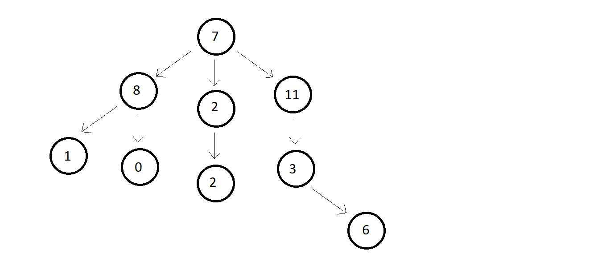

Introduction to trees
A tree usually represents the hierarchy of elements and depicts the relationships between the elements.
Trees are considered as one of the largely used facets of data structures.
To give you a better idia of how a tree looks like, let me give an example

-
Every circle represents a node.
- Every arrow represents the hierarchy.
Terminology used in trees:
- Root→ The topmost node of tree.
- There is no edge pointing to it
- But one or more then one edge oiginating from it.
- Here, A is the root node.
- Parent→ Any node which connects to the child.
- Node which has an edge pointing to some other node.
- Here, C is the parent of H.
- Child→ Any node which is connected to a parent node.
- Node which has an edge pointing to it, from some other node
- Here, H is the child of C
- Siblings→ Node belonging to the same parent are called siblings of each other.
- Nodes B, C and D are siblings of each other, since they have the same parent node A.
- Ancestors→ Node accessible by following up the eges from a child node upwards.
- Ancestors are also the parents of the parent of.. that node
- Here, node A, C and H are the ancestors of node I.
- Descendants→ Nodes accessible by following up the edges from a parent node downwards.
- Descendants are also the child of the child of .... that node.
- Here, node E, F, G and I are leaf nodes.
- Leaf/External node→ Nodes which have no edge originating from it, and have no child attached to it.
- These nodes cannot be a parent
- Here, nodes E, F, G and I are leaf nodes.
- Internal node→ Nodes with al least one child.
- Here, nodes B, D and C are internal nodes.
- Depth→ Deapth of a node is the number of edges from root to that node.
- Here, the depth of nodes A, C, g and I are 0, 1, 2 and 3 respectively.
- Height→ Height of a node is the number of edges from that node to the deepest leaf.
- Here, the height of node A is 3, since the deepest leaf from this node is node I.
- Similarly, height of node C is 2.